Overview
This vignette demonstrates how to use
PhenoMapR on a single-cell RNA-seq
dataset. We use the CRA001160 pancreatic cancer dataset
from Peng et
al. 2019 [1]. This dataset comprises single-cell
RNA-seq of 57,530 pancreatic cells from 25 primary PAAD tumors and 9
control pancreases. Pre-processed expression and metadata were obtained
from TISCH2 [2]. We score all samples in the dataset with
TCGA and PRECOG meta-z signatures [3] then use the metadata and score outputs to
visualize cell types of interest, define prognostic groups of cells, and
identify marker genes for the most phenotype associated cell
populations. Results are compared with those obtained using the
SIDISH method from Jolasun et
al. 2025 [4].
Load data
We will use pre-processed expression and annotation files from TISCH2 for the CRA001160 dataset. Download the expression matrix and cell metadata from Google Drive and visualize cell type distributions across all samples in the dataset.
suppressPackageStartupMessages({
if (!isTRUE(.try_load_phenomapr_dev())) {
library(PhenoMapR)
}
library(googledrive)
library(ggplot2)
library(ggpubr)
library(dplyr)
library(Seurat)
library(patchwork)
library(ComplexHeatmap)
library(circlize)
library(ggchicklet2)
})
options(googledrive_quiet = TRUE)
googledrive::drive_deauth()
googledrive::drive_download(googledrive::as_id("1PolTXggREz8XmhutCLTQJGCfKxFAzqMl"), "PAAD_CRA001160_expression.h5", overwrite = TRUE)
googledrive::drive_download(googledrive::as_id("17mqxnKOZJn0jW2iD9RV0wZeWsilAIwdu"), "PAAD_CRA001160_CellMetainfo_table.tsv", overwrite = TRUE)
# Expression matrix
expr_mat <- Seurat::Read10X_h5("PAAD_CRA001160_expression.h5")
# Cell and sample metadata
meta <- read.delim("PAAD_CRA001160_CellMetainfo_table.tsv", stringsAsFactors = FALSE, check.names = FALSE) %>%
mutate(`Celltype (original)` = gsub(" cell", "", `Celltype (original)`)) %>%
dplyr::rename(celltype_malignancy = `Celltype (malignancy)`,
celltype_original = `Celltype (original)`)
# visuals for cohort
paad_vs_ctrl_clors <- c(
"Normal" = "#b35806",
"Tumor" = "#8073ac"
)
pal_cells <- PhenoMapR::get_celltype_palette(meta$celltype_original)
malignant_colors <- c(
"Others" = "#007D82FF",
"Immune cells" = "#388F30FF",
"Stromal cells" = "#C38961FF",
"Malignant cells" = "#950404FF"
)
# UMAPS for the cell type clustering
# PDAC vs control
umap_1 <- ggscatter(meta,
x = "UMAP_1",
y = "UMAP_2",
size = .5,
color = "Source",
palette = paad_vs_ctrl_clors,
legend = "right"
) + guides(color = guide_legend(override.aes = list(size = 2))) +
labs(color = "Source") +
theme_void()
# Broad cell group labels
umap_2 <- ggscatter(meta,
x = "UMAP_1",
y = "UMAP_2",
size = .5,
color = "celltype_malignancy",
palette = malignant_colors,
legend = "right"
) + guides(color = guide_legend(override.aes = list(size = 2))) +
labs(color = "Cell Type (Broad)") +
theme_void()
# Original cell type labels from the authors
umap_3 <- ggscatter(meta,
x = "UMAP_1",
y = "UMAP_2",
size = .5,
color = "celltype_original",
palette = pal_cells,
legend = "right"
) + guides(color = guide_legend(override.aes = list(size = 2), legend.spacing.x = unit(0.5, 'cm')))+
labs(color = "Cell Type", ) +
theme_void() +
theme(
legend.spacing.y = unit(0.1, "cm"), # reduce vertical spacing
legend.key.height = unit(0.3, "cm") # reduce key height
)
# MALIGNANT PLOT
target_celltype <- "Malignant cells"
# Calculate proportions
prop_data_mal <- meta %>%
group_by(Patient, celltype_malignancy) %>%
summarise(n = n(), .groups = "drop") %>%
group_by(Patient) %>%
mutate(proportion = n / sum(n))
# Create a complete list with 0 for missing cell types
sample_order <- prop_data_mal %>%
ungroup() %>% # Add this!
filter(celltype_malignancy == target_celltype) %>%
tidyr::complete(Patient = unique(prop_data_mal$Patient), fill = list(proportion = 0)) %>%
arrange(desc(proportion)) %>%
pull(Patient)
prop_data_mal$Patient <- factor(prop_data_mal$Patient, levels = sample_order)
# Plot
p_mal <- ggplot(prop_data_mal, aes(x = Patient, y = proportion, fill = celltype_malignancy)) +
# geom_bar(stat = "identity", color = "white", linewidth = 0.2) +
ggchicklet2::geom_chicklet_bar(stat = "identity",radius = grid::unit(1, "pt"),linewidth = 0.2) +
scale_y_continuous(labels = scales::percent) +
scale_fill_manual(values = malignant_colors) +
theme_pubclean(base_size = 8) +
theme(
axis.title.x = element_blank(),
axis.text.x = element_blank(),
axis.ticks.x = element_blank(),
legend.position = "none"
) +
labs(x = NULL, y = NULL, fill = "Cell Type (Broad)")
# CELL TYPE PLOT
# Calculate proportions
prop_data <- meta %>%
group_by(Patient, celltype_original) %>%
summarise(n = n(), .groups = "drop") %>%
group_by(Patient) %>%
mutate(proportion = n / sum(n))
prop_data$Patient <- factor(prop_data$Patient, levels = sample_order)
# Plot
p_cell <- ggplot(prop_data, aes(x = Patient, y = proportion, fill = celltype_original)) +
# geom_bar(stat = "identity", color = "white", linewidth = 0.2) +
ggchicklet2::geom_chicklet_bar(stat = "identity",radius = grid::unit(1, "pt"),linewidth = 0.2) +
scale_y_continuous(labels = scales::percent) +
scale_fill_manual(values = pal_cells) +
theme_pubclean(base_size = 8) +
theme(
axis.text.x = element_text(angle = 90, hjust = 1, vjust = 0.5),
legend.position = "none") +
labs(x = NULL,
y = "Proportion of cells",
fill = "Cell Type",
title = NULL)
# NUMBER OF CELLS PER PATIENT
meta$Patient <- factor(meta$Patient, levels = sample_order)
p_num <- ggplot(meta, aes(x = Patient)) +
# geom_bar(fill = "grey55", color = "white", linewidth = 0.2) +
ggchicklet2::geom_chicklet_bar(
radius = grid::unit(.5, "pt"),
color = "white", linewidth = 0.2,
fill = "grey55") +
theme_pubclean(base_size = 8) +
theme(
axis.title.x = element_blank(),
axis.text.x = element_blank(),
axis.ticks.x = element_blank()
) +
labs(x = NULL,
y = "# of cells",
title = NULL)
# Left column with specific heights for each barplot
left_plots <- (p_num / p_mal / p_cell) +
plot_layout(heights = c(1, 1, 5), guides = "collect")
# Right column with specific heights for UMAPs
right_plots <- (umap_1 / umap_2 / umap_3) +
plot_layout(heights = c(1, 1, 1), guides = "collect")
# Combine
(left_plots | right_plots) +
plot_layout(widths = c(1, 0.5))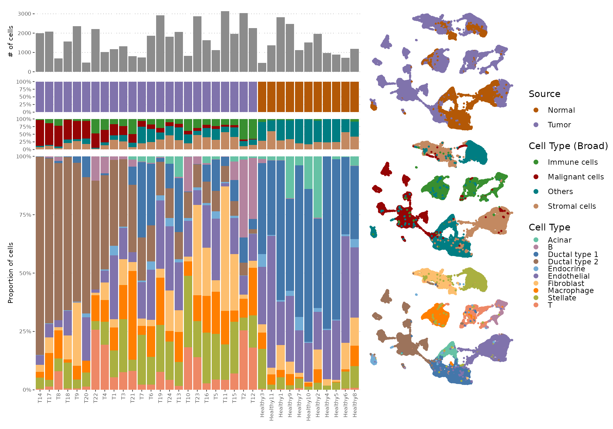
Score cells with PhenoMapR
Because we have survival meta-z signatures from both TCGA and PRECOG PAAD resources, we will score the expression matrix with both references and compare. We then merge score columns into metadata for downstream analysis.
# Score all cells against the TCGA PAAD meta-z signature
scores_tcga <- PhenoMap(expression = expr_mat,
reference = "tcga",
cancer_type = "PAAD",
verbose = TRUE)## 4844 genes used for scoring against PAAD
## Calculating scores...
## Completed scoring for PAAD
# Score all cells against the PRECOG Primary Pancreatic meta-z signature
scores_precog <- PhenoMap(expression = expr_mat,
reference = "precog",
cancer_type = "Pancreatic",
verbose = TRUE)## 6556 genes used for scoring against Pancreatic
## Calculating scores...
## Completed scoring for Pancreatic
for (col in names(scores_tcga)) meta[[col]] <- scores_tcga[meta$Cell, col]
for (col in names(scores_precog)) meta[[col]] <- scores_precog[meta$Cell, col]
score_tcga_col <- grep("weighted_sum_score.*PAAD", names(meta), value = TRUE, ignore.case = TRUE)[1]
score_precog_col <- grep("weighted_sum_score.*Pancreatic", names(meta), value = TRUE, ignore.case = TRUE)[1]
if (is.na(score_tcga_col)) score_tcga_col <- names(scores_tcga)[1]
if (is.na(score_precog_col)) score_precog_col <- names(scores_precog)[1]Compare TCGA vs PRECOG PhenoMapR scores
Here, we take the resulting PhenoMapR
scores from using TCGA and PRECOG as references and check to make sure
they are correlated within each of the four main cell type
categories.
df_scatter <- data.frame(
x = meta[[score_precog_col]],
y = meta[[score_tcga_col]],
Cell_Type = factor(meta$celltype_malignancy)
)
ggpubr::ggscatter(df_scatter, x = "x", y = "y", color = "Cell_Type", palette = malignant_colors,
add = "reg.line", conf.int = TRUE, size = 0.5, alpha = 0.3) +
ggpubr::stat_cor(aes(color = Cell_Type), label.x.npc = "left", size = 3.5, show.legend = F) +
scale_color_manual(values = malignant_colors) +
scale_fill_manual(values = malignant_colors) +
scale_x_continuous("PRECOG score") +
scale_y_continuous("TCGA score") +
labs(title = "TCGA vs. PRECOG PhenoMapR scores by broad cell type") +
theme_pubr(base_size = 10) +
theme(legend.position = "right", legend.title = element_text(size = 12), legend.text = element_text(size = 10))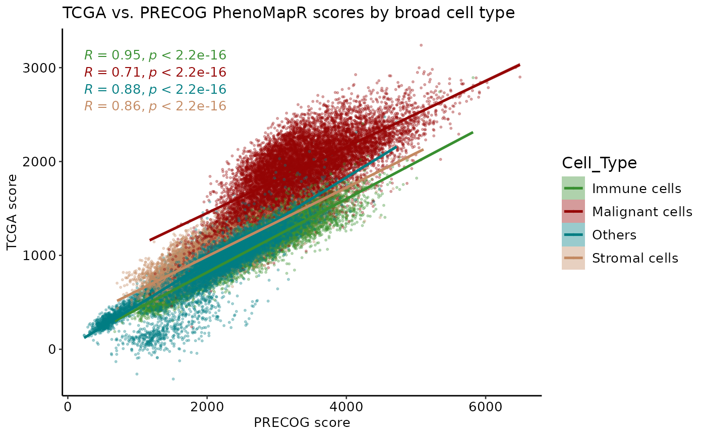
df_scatter <- data.frame(
x = meta[[score_precog_col]],
y = meta[[score_tcga_col]],
Cell_Type = factor(meta$celltype_original)
)
ggpubr::ggscatter(df_scatter, x = "x", y = "y", color = "Cell_Type", palette = pal_cells,
add = "reg.line", conf.int = TRUE, size = 0.5, alpha = 0.3) +
ggpubr::stat_cor(aes(color = Cell_Type), label.x.npc = "left", size = 3.5, show.legend = F) +
scale_color_manual(values = pal_cells) +
scale_fill_manual(values = pal_cells) +
scale_x_continuous("PRECOG score") +
scale_y_continuous("TCGA score") +
labs(title = "TCGA vs. PRECOG PhenoMapR scores by cell type") +
theme_pubr(base_size = 10) +
theme(legend.position = "right", legend.title = element_text(size = 12), legend.text = element_text(size = 10))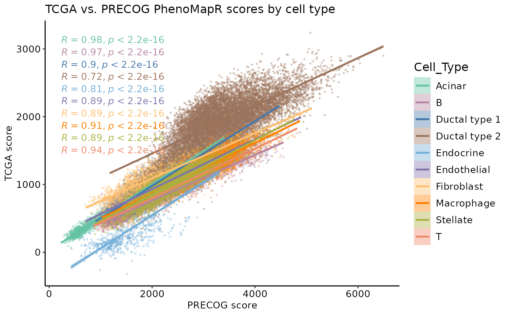
As expected, PhenoMapR scores are
strongly correlated between TCGA and PRECOG references across all major
cell types.
PhenoMapR score UMAP
# PRECOG
meta_ordered <- meta %>%
arrange(abs(weighted_sum_score_Pancreatic))
# scale the score for easier visualization
meta_ordered$score_scaled <- scale(meta_ordered$weighted_sum_score_Pancreatic)
precog_scaled_umap <- ggscatter(meta_ordered,
x = "UMAP_1",
y = "UMAP_2",
size = 1,
color = "score_scaled",
legend = "right",
title = NULL
) +
scale_color_gradient2(
low = "#2166AC",
mid = "#F7F7F7",
high = "#B2182B",
midpoint = 0,
name = "PhenoMapR\nScore"
) +
theme_void() +
theme(plot.title = element_text(hjust = 0.5))
# Let's plot next to the cell type UMAP for comparison
(umap_2 | precog_scaled_umap) +
plot_layout(widths = c(1, 1))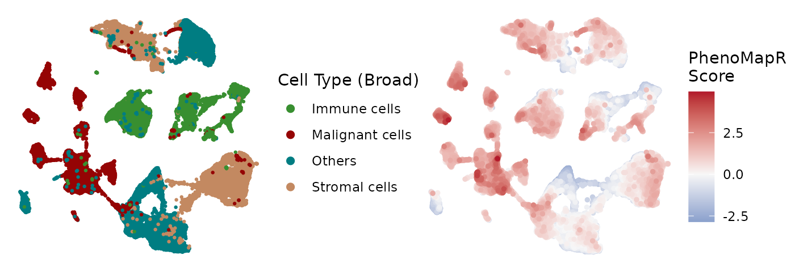
It seems like the most adversely scoring cells are enriched in several of the Ductal type 2 cell clusters while the most favorable are enriching in the acinar and endocrine clusters.Prognostic score distribution by Cell Type
The qualitative assessment of PhenoMapR score enrichment across UMAP clusters nominated some cell types as potentially more associated with the phenotypic signature than others. Here, we plot the absolute PhenoMapR score (PRECOG and TCGA scores) across all cell types in the dataset.
med_precog <- setNames(
tapply(meta[[score_precog_col]], meta$celltype_malignancy, median, na.rm = TRUE),
levels(factor(meta$celltype_malignancy))
)
# med_precog <- med_precog[!is.na(med_precog)]
ct_order <- names(sort(med_precog))
meta$celltype_malignancy <- factor(meta$celltype_malignancy, levels = ct_order)
dl <- rbind(
data.frame(Reference = "TCGA PAAD", Score = meta[[score_tcga_col]], Cell_type = meta$celltype_malignancy, stringsAsFactors = FALSE),
data.frame(Reference = "PRECOG Pancreatic", Score = meta[[score_precog_col]], Cell_type = meta$celltype_malignancy, stringsAsFactors = FALSE)
)
dl$Reference <- factor(dl$Reference, levels = c("TCGA PAAD", "PRECOG Pancreatic"))
ggplot(dl, aes(x = Cell_type, y = Score, fill = Cell_type)) +
# geom_boxplot(outlier.alpha = 0.2) +
ggchicklet2::geom_chicklet_boxplot(radius = grid::unit(1, "pt"),outlier.alpha = 0.5, median.linewidth = 0.5,
outlier.fill = NULL,
outlier.color = NULL, outlier.shape = 21) +
facet_wrap(~ Reference, ncol = 2) +
scale_fill_manual(values = malignant_colors, name = "Cell Type (Broad)") +
theme_pubr(base_size = 10) +
theme(
axis.text.x = element_text(angle = 45, hjust = 1),
legend.position = "right",
strip.text = element_text(size = 12)) +
labs(x = NULL, y = "PhenoMapR score", title = "Score distribution by reference and cell type")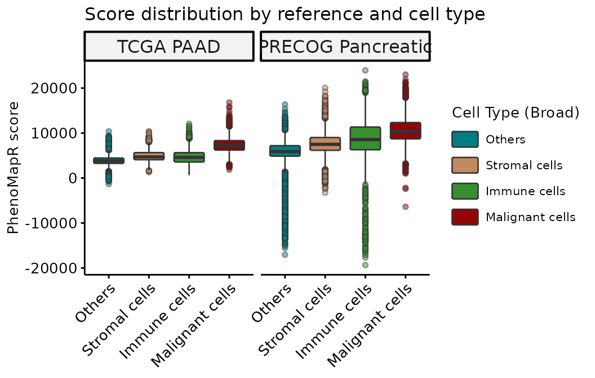
PhenoMapR successfully identifies the
Malignant cell compartment as most associated with the
adverse prognostic signature in both TCGA and PRECOG.
Score distribution by refined cell type
To see if the PhenoMapR score
assignment is enriched in more granular cell types, we use the original
cell type labels provided by the authors (Peng et al.
2019).
med_precog <- setNames(
tapply(meta[[score_precog_col]], meta$celltype_original, median, na.rm = TRUE),
levels(factor(meta$celltype_original))
)
# med_precog <- med_precog[!is.na(med_precog)]
ct_order <- names(sort(med_precog))
meta$celltype_original <- factor(meta$celltype_original, levels = ct_order)
dl <- rbind(
data.frame(Reference = "TCGA PAAD", Score = meta[[score_tcga_col]], Cell_type = meta$celltype_original, stringsAsFactors = FALSE),
data.frame(Reference = "PRECOG Pancreatic", Score = meta[[score_precog_col]], Cell_type = meta$celltype_original, stringsAsFactors = FALSE)
)
dl$Reference <- factor(dl$Reference, levels = c("TCGA PAAD", "PRECOG Pancreatic"))
ggplot(dl, aes(x = Cell_type, y = Score, fill = Cell_type)) +
# geom_boxplot(outlier.alpha = 0.2) +
ggchicklet2::geom_chicklet_boxplot(radius = grid::unit(1, "pt"),
outlier.alpha = 0.5, median.linewidth = 0.5,
outlier.fill = NULL,
outlier.color = NULL, outlier.shape = 21) +
facet_wrap(~ Reference, ncol = 2) +
scale_fill_manual(values = pal_cells, name = "Cell Type") +
theme_pubr(base_size = 10) +
theme(axis.text.x = element_text(angle = 45, hjust = 1), legend.position = "right", strip.text = element_text(size = 12)) +
labs(x = NULL, y = "PhenoMapR score", title = "Score distribution by reference and cell type")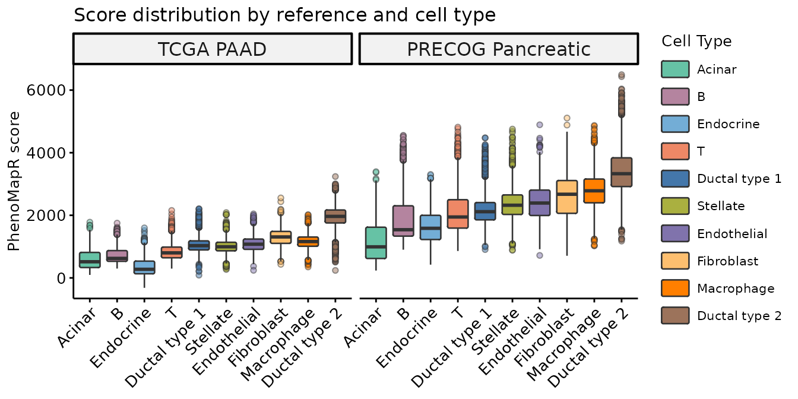
In both TCGA and PRECOG results, we see that the Ductal cell type 2 is the most significantly associated cell type with an adverse prognostic signature in PAAD. This agrees with the results from SIDISH Jolasun et al., where they find over 55% of their high-risk cells were Ductal cell type 2.
Score distribution by sample source
Theoretically, the PhenoMapR scores should be differentially distributed between tumor or normal samples. We plot the scores per cell type, split by tumor/normal source:
library(ggsignif)
library(purrr)
library(dplyr)
dl <-
data.frame(Reference = "PRECOG Pancreatic", Source = meta$Source, Score = meta[[score_precog_col]], Cell_type = meta$celltype_original, stringsAsFactors = FALSE)
cell_levels <- levels(factor(dl$Cell_type)) # or your factor order
# For each cell type, check which sources are present
source_offsets <- c("Normal" = -0.2, "Tumor" = 0.2) # matches dodge width = 0.8 → each side ±0.2
# --- 2. Compute p-values per cell type ---
pval_df <- dl %>%
group_by(Cell_type) %>%
summarise(
n_sources = n_distinct(Source),
p_val = ifelse(
n_distinct(Source) > 1,
wilcox.test(scale(Score)[Source == "Normal"],
scale(Score)[Source == "Tumor"])$p.value,
NA_real_
),
.groups = "drop"
) %>%
filter(!is.na(p_val)) %>%
mutate(
# Use the SAME factor used in ggplot
x_pos = as.integer(factor(Cell_type, levels = levels(factor(dl$Cell_type)))),
xmin = x_pos - 0.2,
xmax = x_pos + 0.2,
# Per-group y_pos based on actual data max for that cell type
y_pos = max(scale(dl$Score), na.rm = TRUE) * 1.05,
label = case_when(
p_val < 0.001 ~ "***",
p_val < 0.01 ~ "**",
p_val < 0.05 ~ "*",
TRUE ~ "ns"
)
)
# --- 3. Plot ---
ggplot(dl, aes(x = Cell_type, y = scale(Score), fill = Cell_type, color = Source)) +
# geom_boxplot(outlier.alpha = 0.2, position = position_dodge(width = 0.8)) +
# geom_boxplot(outlier.alpha = 0.5, median.linewidth = 0.5,
# outlier.fill = NULL,
# outlier.color = NULL, outlier.shape = 21) +
# # geom_boxplot(outlier.alpha = 0.2) +
ggchicklet2::geom_chicklet_boxplot(radius = grid::unit(1, "pt"),
outlier.alpha = 0.5, median.linewidth = 0.5,
outlier.fill = NULL,
outlier.color = NULL, outlier.shape = 21) +
geom_signif(
data = pval_df,
aes(xmin = xmin, xmax = xmax, annotations = label, y_position = y_pos),
manual = TRUE,
tip_length = 0.02,
textsize = 4,
color = "black", # override the color aes from the main plot
inherit.aes = T
) +
scale_fill_manual(values = pal_cells, name = "\nCell Type") +
scale_color_manual(values = c("Normal" = "lightgrey", "Tumor" = "black"), name = "Source") +
guides(
fill = guide_legend(order = 1),
color = guide_legend(order = 2)
) +
theme_pubr(base_size = 14) +
theme(
axis.text.x = element_text(angle = 45, hjust = 1),
legend.position = "right",
strip.text = element_text(size = 12),
plot.title = element_text(hjust = 0.5)
) +
labs(x = NULL, y = "PhenoMapR score (scaled)", title = "PhenoMapR Score distribution by Source and Cell Type")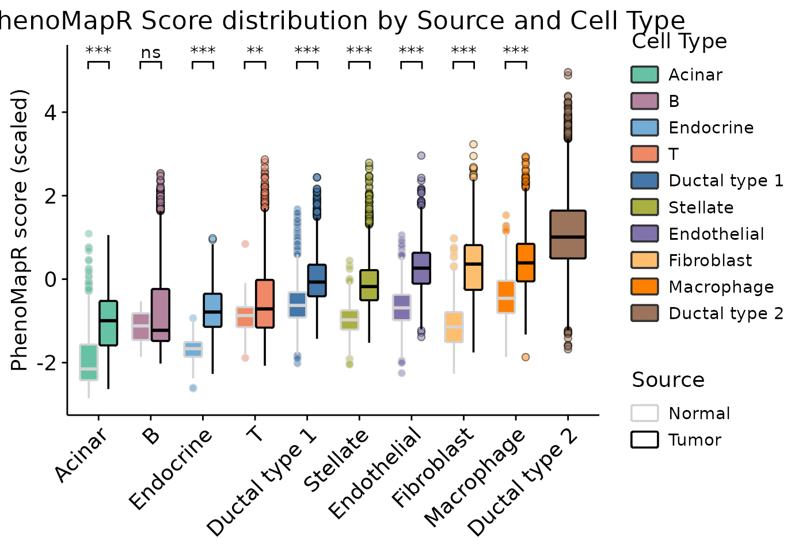
Indeed, tumor samples are significantly enriched for more adverse scores across all cell types except B cells.Cell types in the most prognostic populations
Cell type counts in the top 5% (Most Adverse) and bottom 5% (Most Favorable) of cells by PRECOG score.
q_lo <- quantile(meta[[score_precog_col]], 0.05, na.rm = TRUE)
q_hi <- quantile(meta[[score_precog_col]], 0.95, na.rm = TRUE)
pg_tmp <- ifelse(meta[[score_precog_col]] >= q_hi, "Most Adverse", ifelse(meta[[score_precog_col]] <= q_lo, "Most Favorable", NA))
idx_extreme <- !is.na(pg_tmp)
ct_in_extreme <- meta[idx_extreme, ]
ct_in_extreme$pg <- pg_tmp[idx_extreme]
ct_counts <- as.data.frame(table(Cell_type = ct_in_extreme$celltype_malignancy, pg = ct_in_extreme$pg))
ct_wide <- reshape(ct_counts, idvar = "Cell_type", timevar = "pg", direction = "wide")
names(ct_wide) <- gsub("Freq\\.", "", names(ct_wide))
for (c in c("Most Adverse", "Most Favorable")) {
if (!c %in% names(ct_wide)) ct_wide[[c]] <- 0
}
ct_wide$Cell_type <- factor(ct_wide$Cell_type, levels = ct_wide$Cell_type[order(ct_wide$`Most Adverse`, decreasing = TRUE)])
ct_long <- rbind(
data.frame(Cell_type = ct_wide$Cell_type, pg = "Most Favorable", n = -ct_wide$`Most Favorable`),
data.frame(Cell_type = ct_wide$Cell_type, pg = "Most Adverse", n = ct_wide$`Most Adverse`)
)
ct_long$pg <- factor(ct_long$pg, levels = c("Most Favorable", "Most Adverse"))
max_n <- max(abs(ct_long$n), 1)
ggplot(ct_long, aes(x = Cell_type, y = n, fill = pg)) +
ggchicklet2::geom_chicklet_bar(stat = "identity", radius = grid::unit(0, "pt")) +
coord_flip() +
scale_fill_manual(values = c(`Most Adverse` = "#B2182B", `Most Favorable` = "#2166AC"), name = "Prognostic group") +
scale_y_continuous(breaks = seq(-max_n, max_n, length.out = 5), labels = abs(seq(-max_n, max_n, length.out = 5))) +
theme_pubr(base_size = 10) +
theme(
axis.text.y = element_text(size = 9),
legend.position = c(.8, .7),
plot.title = element_text(hjust = 0.5, size = 10)) +
labs(x = NULL, y = "Cell count (in 5th percentile)", title = "Broad cell type abundance in \nadverse vs. favorable extremes")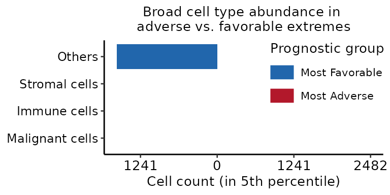
At a broad cell type level, PhenoMapR assigns the vast majority of the top 5% of adverse cells to the malignant compartment, however the immune, stromal, and other cell types do contain some of the most adversely scoring cells.We then use the original cell type annotations from the authors to provide a more refined understanding of the prognostic score assignment across cell types.
ct_orig_in_extreme <- meta[idx_extreme, ]
ct_orig_in_extreme$pg <- pg_tmp[idx_extreme]
ct_orig_counts <- as.data.frame(table(Cell_type_original = ct_orig_in_extreme$celltype_original, pg = ct_orig_in_extreme$pg))
ct_orig_wide <- reshape(ct_orig_counts, idvar = "Cell_type_original", timevar = "pg", direction = "wide")
names(ct_orig_wide) <- gsub("Freq\\.", "", names(ct_orig_wide))
for (c in c("Most Adverse", "Most Favorable")) {
if (!c %in% names(ct_orig_wide)) ct_orig_wide[[c]] <- 0
}
ct_orig_wide$Cell_type_original <- factor(ct_orig_wide$Cell_type_original, levels = ct_orig_wide$Cell_type_original[order(ct_orig_wide$`Most Adverse`, decreasing = TRUE)])
ct_orig_long <- rbind(
data.frame(Cell_type_original = ct_orig_wide$Cell_type_original, pg = "Most Favorable", n = -ct_orig_wide$`Most Favorable`),
data.frame(Cell_type_original = ct_orig_wide$Cell_type_original, pg = "Most Adverse", n = ct_orig_wide$`Most Adverse`)
)
ct_orig_long$pg <- factor(ct_orig_long$pg, levels = c("Most Favorable", "Most Adverse"))
max_n_orig <- max(abs(ct_orig_long$n), 1)
print(ggplot(ct_orig_long, aes(x = Cell_type_original, y = n, fill = pg)) +
ggchicklet2::geom_chicklet_bar(stat = "identity", radius = grid::unit(0, "pt")) +
coord_flip() +
scale_fill_manual(values = c(`Most Adverse` = "#B2182B", `Most Favorable` = "#2166AC"), name = "Prognostic group") +
scale_y_continuous(
breaks = round(seq(-max_n_orig, max_n_orig, length.out = 5)),
labels = abs(round(seq(-max_n_orig, max_n_orig, length.out = 5)))
) +
theme_pubr(base_size = 10) +
theme(
axis.text.y = element_text(size = 9),
legend.position = c(.8, .75),
plot.title = element_text(hjust = 0.5, size = 10)
) +
labs(x = NULL, y = "Cell count (in 5th percentile)", title = "Cell Type abundance in adverse\nvs. favorable extremes"))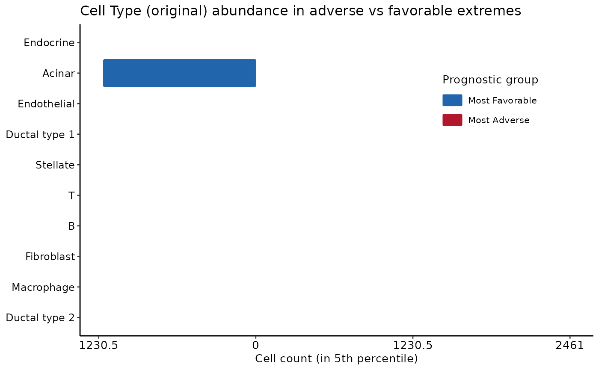
Here, we see that the vase majority of the top 5th percentile of adverse PhenoMapR cells are from the Ductal type 2 cells, in line with the results of Jolasun et al.. The majority of favorably scoring cells were Acinar and B cell populations.Phenotype groups and marker genes
PhenoMapR provides some high-level
analysis functions to help characterize the most phenotypically relevant
cells. We define the “Most Adverse” and “Most Favorable” cells from the
PRECOG PhenoMapR score (5th/95th percentiles), then run
marker identification (adverse vs rest, favorable vs rest) using the
original cell type annotation for context.
scores_df <- meta[, c(score_tcga_col, score_precog_col), drop = FALSE]
groups <- define_phenotype_groups(scores_df, percentile = 0.05, score_columns = score_precog_col)
group_col <- grep("phenotype_group", names(groups), value = TRUE)[1]
meta[[group_col]] <- groups[rownames(meta), group_col]
markers <- NULL
markers <- find_phenotype_markers(
expr_mat,
group_labels = meta[[group_col]],
pval_threshold = 0.05,
max_cells_per_ident = 5000L
)
if (!is.null(markers)) {
message("Adverse markers (top 5):"); print(head(markers$adverse_markers, 5))
message("Favorable markers (top 5):"); print(head(markers$favorable_markers, 5))
}## gene avg_log2FC pct_in_group pct_rest p_val p_adj
## 13 ISG15 1.3634979 93.17786 41.839197 0 0
## 34 AURKAIP1 0.8237655 93.83919 52.991236 0 0
## 69 RER1 0.7967829 91.01984 41.686778 0 0
## 76 PRXL2B 0.4068488 52.94118 9.526229 0 0
## 101 ICMT 0.3150654 53.28924 12.282484 0 0## gene avg_log2FC pct_in_group pct_rest p_val p_adj
## 21079 ISG15 -1.2916584 15.97633 70.01143 0 0
## 21192 ENO1 -1.6344839 34.63279 85.16449 0 0
## 21295 CAPZB -0.9759845 31.56979 80.82053 0 0
## 21298 NBL1 -0.7554952 9.64149 55.70939 0 0
## 21325 CDC42 -1.1043594 37.66098 84.97396 0 0Marker genes heatmap
After identifying marker genes for the adverse and favorable
PhenoMapR populations, we take up to
10 positive markers per tail with FDR <
0.05 and the largest avg_log2FC
(same thresholds as the cell-type–specific heatmap). The helper
plot_phenotype_markers() subsets the
expression matrix to those genes and the ordered cells, then applies
row-wise scale only to that submatrix.
ComplexHeatmap shows favorable-marker rows, then
adverse-marker rows, with anno_mark for
the top five genes in each block.
plot_phenotype_markers(
markers = markers,
expr_mat = expr_mat,
meta = meta,
cell_id_col = "Cell",
group_col = group_col,
score_col = score_precog_col,
celltype_col = "celltype_original",
celltype_palette = pal_cells,
heatmap_type = "global",
top_n_markers = 10L,
n_mark_labels = 10L,
p_adj_threshold = 0.05
)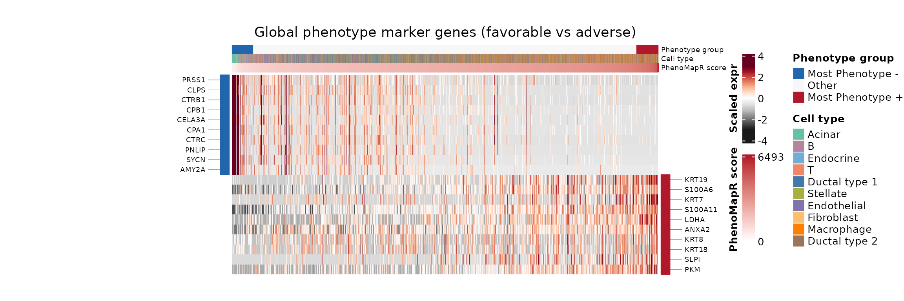
It’s clear from the heatmap that the cell type driving the favorable prognostic signal is the Acinar cell type. Cell-type specific marker identification within the most prgnostic group would further resolve other cell type markers associated with favorable outcomes in this dataset.Cell-type-specific phenotype marker genes
The find_phenotype_markers() function can also identify
marker genes for each cell type by contrasting cells in
the phenotype tails (Most Adverse or Most Favorable) against a reference
group. By default (celltype_contrast = "within_cell_type"),
the reference is only other cells of the same type
(Other and the opposite tail)—this reduces ubiquitous genes
appearing in many blocks. The original cohort-wide
contrast (cell type ∩ tail) vs all other
cells is available as
celltype_contrast = "vs_cohort_rest". By default
(celltype_unique_genes = TRUE), each gene is kept in a
single cell-type–phenotype block (the one with the
strongest avg_log2FC), so ubiquitous transcripts are not
repeated across many blocks. We visualize the top marker genes per cell
type and phenotype bin in a heatmap that includes all cells,
ordered by: 1) phenotype bin (Most Favorable, Other, Most Adverse), then
2) cell type, then 3) phenotype score.
For the heatmap, we take up to 20 positive markers
per cell type and phenotype tail with the largest
avg_log2FC, restricting to genes that are
FDR-significant (p_adj from
Benjamini–Hochberg < 0.05). Rows follow the same column
order: Most Favorable (each cell type),
Other cells, Most Adverse (each cell
type).
plot_phenotype_markers(..., heatmap_type = "cell_type_specific")
draws row splits between blocks; anno_mark
labels the top five genes (by log2FC) within each
(phenotype tail × cell type) group, with cell type and
phenotype strips on the left. Setting
color_mark_labels_by_celltype = TRUE
colors each labeled gene with its cell-type palette so markers are
easier to read against the strips.
group_df <- data.frame(
cell_id = meta$Cell,
phenotype_group = meta[[group_col]],
cell_type = meta$celltype_original,
stringsAsFactors = FALSE
)
markers_ct <- find_phenotype_markers(
expr_mat,
group_labels = group_df,
group_column = "phenotype_group",
cell_id_column = "cell_id",
cell_type_column = "cell_type",
marker_scope = "cell_type_specific",
pval_threshold = 0.05,
max_cells_per_ident = 5000L,
verbose = FALSE
)
plot_phenotype_markers(
markers = markers_ct,
expr_mat = expr_mat,
meta = meta,
cell_id_col = "Cell",
group_col = group_col,
score_col = score_precog_col,
celltype_col = "celltype_original",
celltype_palette = pal_cells,
heatmap_type = "cell_type_specific",
top_n_markers = 10L,
n_mark_labels = 5L,
color_mark_labels_by_celltype = TRUE,
p_adj_threshold = 0.05, outline_marker_blocks = T
)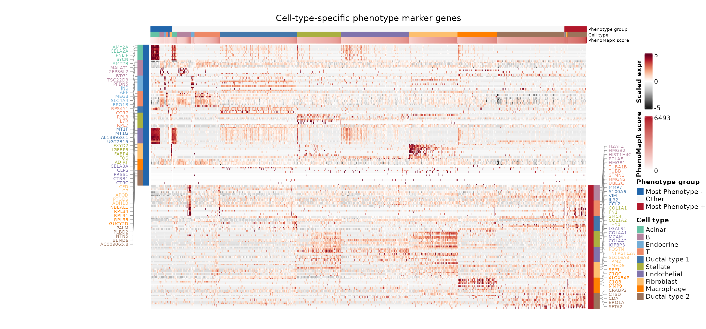
group_df <- data.frame(
cell_id = meta$Cell,
phenotype_group = meta[[group_col]],
cell_type = meta$celltype_original,
stringsAsFactors = FALSE
)
markers_ct <- find_phenotype_markers(
expr_mat,
group_labels = group_df,
group_column = "phenotype_group",
cell_id_column = "cell_id",
cell_type_column = "cell_type",
marker_scope = "cell_type_specific",
celltype_contrast = "vs_opposite_tail",
pval_threshold = 0.05,
max_cells_per_ident = 5000L,
verbose = FALSE
)
plot_phenotype_markers(
markers = markers_ct,
expr_mat = expr_mat,
meta = meta,
cell_id_col = "Cell",
group_col = group_col,
score_col = score_precog_col,
celltype_col = "celltype_original",
celltype_palette = pal_cells,
heatmap_type = "cell_type_specific",
outline_marker_blocks = TRUE,
block_outline_color = "black",
top_n_markers = 5L,
n_mark_labels = 5L,
color_mark_labels_by_celltype = TRUE,
p_adj_threshold = 0.05,
)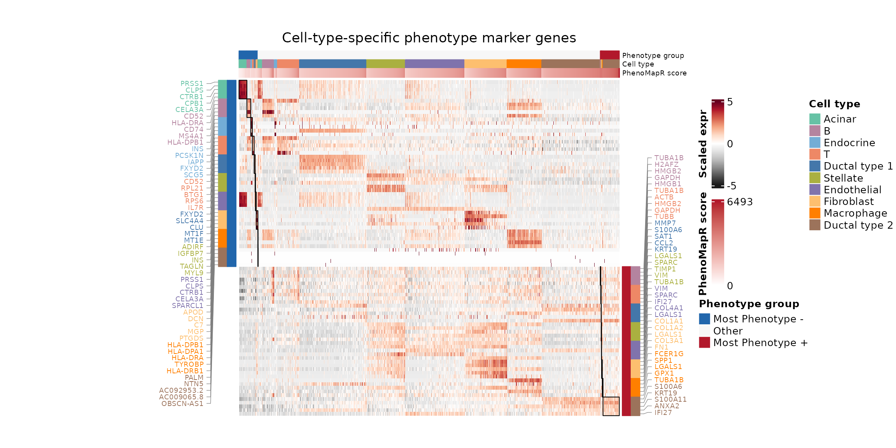
Dataset summary of PhenoMapR results
Here, we summarize the enrichment of prognostic PhenoMapR scores
across samples and cell types to highlight the difference in signal
between healthy and tumor samples as well as between different cell
populations across the sample groups. The top panel
shows one PRECOG score per pseudo-bulk sample profile
without building a Seurat object: we map
each cell’s barcode to a sample ID (same column used elsewhere in this
figure), sum counts per gene across all cells in that
sample, and assemble a genes × samples table
(expr_agg_df, one column per sample). That object is the
usual bulk-style input to
PhenoMap() (rows = genes, columns =
samples), so each column is scored once with the same weighted-sum
PRECOG logic used for bulk data. (The
pseudobulk = TRUE argument applies when
PhenoMap aggregates from a
Seurat object; here aggregation is
explicit in the table, which avoids large
Seurat allocations and matches
sum-per-sample pseudo-bulk expression.) Values are
z-scaled across samples so bars are comparable for
relative high/low bulk-like signal per sample. The stacked
bar uses the same 5th / 95th percentile PRECOG
tails as elsewhere in the vignette
(define_phenotype_groups(..., percentile = 0.05)),
applied again in this chunk so every cell receives a Most
Adverse, Most Favorable, or
Other label and per-sample proportions of tail
cells always sum sensibly over the full cohort. All
panels share one sample axis order (sample_lev):
factor levels are used when the sample column is
already a factor (e.g. Patient after
ordering earlier in the vignette); otherwise first appearance in
meta. merge() output
for bar heights is re-sorted to that order so
horizontal positions match the pseudo-bulk and dot plots.
sample_col <- NULL
for (cand in c("Sample", "sample", "Patient", "patient", "Sample_ID", "orig.ident")) {
if (cand %in% names(meta)) {
sample_col <- cand
break
}
}
if (is.null(sample_col)) sample_col <- names(meta)[1]
meta_plot <- meta
meta_plot$sample <- meta_plot[[sample_col]]
meta_plot$cell_type <- meta_plot$celltype_malignancy
# meta_plot$cell_type_original <- if (!is.null(celltype_original) && celltype_original %in% names(meta_plot)) meta_plot$celltype_original else NA_character_
meta_plot$cell_type_original <- meta$celltype_original
## Tail labels for p_bar / dots: same rule as marker chunk (5% / 95% on PRECOG score), keyed by Cell
scores_tail <- meta[, score_precog_col, drop = FALSE]
rownames(scores_tail) <- meta$Cell
groups_tail <- define_phenotype_groups(scores_tail, percentile = 0.05, score_columns = score_precog_col)
tail_col_bar <- grep("^phenotype_group_", names(groups_tail), value = TRUE)[1]
meta_plot$prognostic_grp <- unname(groups_tail[as.character(meta_plot$Cell), tail_col_bar])
## Canonical sample order for every panel: preserve factor levels if set upstream (e.g. Patient),
## else first appearance in `meta` (stable, not alphabetical).
sc_ids <- meta[[sample_col]]
sample_lev <- if (is.factor(sc_ids)) {
levels(droplevels(sc_ids))
} else {
unique(as.character(sc_ids))
}
meta_plot$sample <- factor(as.character(meta_plot[[sample_col]]), levels = sample_lev)
n_per_sample <- setNames(as.numeric(table(meta[[sample_col]])[sample_lev]), sample_lev)
n_per_sample[is.na(n_per_sample)] <- 0
## Pseudo-bulk table: cell → sample mapping, sum counts per gene per sample, score with PhenoMap (no Seurat)
cells_pb <- intersect(colnames(expr_mat), meta$Cell)
expr_pb <- expr_mat[, cells_pb, drop = FALSE]
meta_pb <- meta[match(cells_pb, meta$Cell), , drop = FALSE]
rownames(meta_pb) <- cells_pb
sample_ids <- as.character(meta_pb[[sample_col]])
ns <- length(sample_lev)
pb_mat <- matrix(
0,
nrow = nrow(expr_pb),
ncol = ns,
dimnames = list(rownames(expr_pb), as.character(sample_lev))
)
col_filled <- rep(FALSE, ns)
for (j in seq_len(ns)) {
idx <- sample_ids == as.character(sample_lev[j])
if (!any(idx)) next
col_filled[j] <- TRUE
sm <- expr_pb[, idx, drop = FALSE]
pb_mat[, j] <- if (inherits(sm, "Matrix") || inherits(sm, "sparseMatrix")) {
as.numeric(Matrix::rowSums(sm))
} else {
rowSums(sm)
}
}
expr_agg_df <- as.data.frame(pb_mat, stringsAsFactors = FALSE, check.names = FALSE)
scores_precog_pb <- PhenoMap(
expression = expr_agg_df,
reference = "precog",
cancer_type = "Pancreatic",
verbose = FALSE
)
pb_score_col <- if (score_precog_col %in% names(scores_precog_pb)) {
score_precog_col
} else {
grep("^weighted_sum_score", names(scores_precog_pb), value = TRUE)[1]
}
pb_mean <- as.numeric(scores_precog_pb[[pb_score_col]][match(as.character(sample_lev), rownames(scores_precog_pb))])
pb_mean[!col_filled] <- NA_real_
ok_pb <- is.finite(pb_mean)
pb_scaled <- rep(NA_real_, length(pb_mean))
if (sum(ok_pb) >= 2L && stats::sd(pb_mean[ok_pb], na.rm = TRUE) > 0) {
pb_scaled[ok_pb] <- as.numeric(scale(pb_mean[ok_pb]))
} else if (any(ok_pb)) {
pb_scaled[ok_pb] <- 0
}
pb_df <- data.frame(
sample = factor(sample_lev, levels = sample_lev),
pb_score_scaled = pb_scaled,
stringsAsFactors = FALSE
)
p_pbulk <- ggplot(pb_df, aes(x = as.numeric(.data$sample), y = .data$pb_score_scaled, fill = .data$pb_score_scaled)) +
# geom_col(width = 0.65) +
ggchicklet2::geom_chicklet(width = 0.9, radius = grid::unit(1, "pt")) +
scale_fill_gradient2(
low = "#2166AC",
mid = "#FFFFFF",
high = "#B2182B",
midpoint = 0,
na.value = "#d9d9d9",
guide = "none"
) +
geom_hline(yintercept = 0, linewidth = 0.35, linetype = "dashed", color = "grey40") +
scale_x_continuous(
breaks = seq_along(sample_lev),
labels = sample_lev,
limits = c(0.5, length(sample_lev) + 0.5),
expand = c(0, 0)
) +
scale_y_continuous(expand = expansion(mult = c(0.08, 0.08))) +
theme_minimal() +
theme(
axis.text.x = element_blank(),
axis.ticks.x = element_blank(),
axis.title.x = element_blank(),
legend.position = "none"
) +
labs(y = "Sample\nPseudobulk\nscore", title = NULL)
# Per-sample proportion of adverse and favorable (5th / 95th % tails on PRECOG) for stacked bar
meta_adv_fav <- meta_plot[meta_plot$prognostic_grp %in% c("Most Adverse", "Most Favorable"), ]
bar_df <- as.data.frame(table(sample = meta_adv_fav$sample, pg = meta_adv_fav$prognostic_grp, useNA = "no"))
bar_df <- bar_df[bar_df$pg %in% c("Most Adverse", "Most Favorable"), ]
bar_df$total <- n_per_sample[as.character(bar_df$sample)]
bar_df$proportion <- ifelse(bar_df$total > 0, bar_df$Freq / bar_df$total, 0)
fav <- bar_df[bar_df$pg == "Most Favorable", c("sample", "proportion")]
adv <- bar_df[bar_df$pg == "Most Adverse", c("sample", "proportion")]
names(fav)[2] <- "p_fav"
names(adv)[2] <- "p_adv"
bar_stack <- merge(data.frame(sample = sample_lev, stringsAsFactors = FALSE), fav, by = "sample", all.x = TRUE)
bar_stack <- merge(bar_stack, adv, by = "sample", all.x = TRUE)
bar_stack$p_fav[is.na(bar_stack$p_fav)] <- 0
bar_stack$p_adv[is.na(bar_stack$p_adv)] <- 0
## merge() sorts by `by`; restore cohort order so x positions match p_pbulk and dot plots
bar_stack <- bar_stack[match(sample_lev, as.character(bar_stack$sample)), , drop = FALSE]
bar_stack$sample <- factor(bar_stack$sample, levels = sample_lev)
# Stacked bar: per-sample fraction of cohort tail cells (from define_phenotype_groups above)
bar_long <- rbind(
data.frame(sample = bar_stack$sample, pg = "Most Favorable", y_min = 0, y_max = bar_stack$p_fav),
data.frame(sample = bar_stack$sample, pg = "Most Adverse", y_min = bar_stack$p_fav, y_max = bar_stack$p_fav + bar_stack$p_adv)
)
bar_long$pg <- factor(bar_long$pg, levels = c("Most Favorable", "Most Adverse"))
p_bar <- ggplot(bar_long, aes(x = as.numeric(sample), fill = pg,
ymin = y_min, ymax = y_max,
xmin = as.numeric(sample) - 0.4,
xmax = as.numeric(sample) + 0.4)) +
ggchicklet2::geom_rrect(radius = grid::unit(0, "pt")) +
scale_fill_manual(values = c(`Most Adverse` = "#B2182B", `Most Favorable` = "#2166AC"),
name = "Prognostic group") +
scale_x_continuous(
breaks = seq_along(sample_lev),
labels = sample_lev,
limits = c(0.5, length(sample_lev) + 0.5),
expand = c(0, 0)
) +
scale_y_continuous(expand = c(0, 0)) +
theme_minimal() +
theme(
axis.text.x = element_blank(),
axis.ticks.x = element_blank(),
axis.title.x = element_blank(),
legend.position = "none"
) +
labs(y = "Proportion\nof cells\n(in 5th %)", title = NULL)
meta_plot_dots <- meta_plot[meta_plot$prognostic_grp %in% c("Most Adverse", "Most Favorable"), ]
p_dots <- NULL
p_dots_orig <- NULL
if (nrow(meta_plot_dots) > 0) {
## Full `sample_lev` level order so x positions match p_pbulk / p_bar (subset can drop unused levels)
meta_plot_dots$sample <- factor(as.character(meta_plot_dots$sample), levels = sample_lev)
meta_plot_dots$cell_type <- factor(meta_plot_dots$cell_type)
counts <- as.data.frame(table(meta_plot_dots$sample, meta_plot_dots$cell_type, meta_plot_dots$prognostic_grp, dnn = c("sample", "cell_type", "pg")))
totals <- aggregate(counts$Freq, by = list(sample = counts$sample, pg = counts$pg), FUN = sum)
names(totals)[3] <- "total"
counts <- merge(counts, totals, by = c("sample", "pg"))
counts$proportion <- counts$Freq / counts$total
counts$proportion[counts$total == 0] <- 0
counts$sample <- factor(as.character(counts$sample), levels = sample_lev)
counts$x_num <- as.numeric(counts$sample) + ifelse(counts$pg == "Most Adverse", -0.18, 0.18)
p_dots <- ggplot(counts, aes(x = x_num, y = cell_type, size = proportion, color = pg)) +
geom_point(alpha = 0.85) +
scale_color_manual(values = c(`Most Adverse` = "#B2182B", `Most Favorable` = "#2166AC"), name = "Prognostic group") +
scale_size_continuous(range = c(0, 5), name = "Proportion of cell type\nper sample in\nprognostic groups") +
scale_x_continuous(
breaks = seq_along(sample_lev),
labels = sample_lev,
limits = c(0.5, length(sample_lev) + 0.5),
expand = c(0, 0)
) +
theme_minimal() +
theme(panel.grid.major.y = element_line(color = "grey90"),
axis.title = element_text(size = 10),
axis.text.x = element_blank(),
axis.ticks.x = element_blank(),
legend.title = element_text(hjust = 0.5),
legend.position = "right") +
guides(
color = guide_legend(override.aes = list(size = 3)),
# size = guide_legend(override.aes = list(size = c(2, 3, 4, 5, 6)))
) +
labs(x = NULL, y = "Cell type\n(broad)", title = NULL)
if (!all(is.na(meta_plot_dots$cell_type_original))) {
meta_plot_dots$cell_type_original <- factor(meta_plot_dots$cell_type_original)
counts_orig <- as.data.frame(table(meta_plot_dots$sample, meta_plot_dots$cell_type_original, meta_plot_dots$prognostic_grp, dnn = c("sample", "cell_type_original", "pg")))
totals_orig <- aggregate(counts_orig$Freq, by = list(sample = counts_orig$sample, pg = counts_orig$pg), FUN = sum)
names(totals_orig)[3] <- "total"
counts_orig <- merge(counts_orig, totals_orig, by = c("sample", "pg"))
counts_orig$proportion <- counts_orig$Freq / counts_orig$total
counts_orig$proportion[counts_orig$total == 0] <- 0
counts_orig$sample <- factor(as.character(counts_orig$sample), levels = sample_lev)
counts_orig$x_num <- as.numeric(counts_orig$sample) + ifelse(counts_orig$pg == "Most Adverse", -0.18, 0.18)
p_dots_orig <- ggplot(counts_orig, aes(x = x_num, y = cell_type_original, size = proportion, color = pg)) +
geom_point(alpha = 0.85) +
scale_color_manual(values = c(`Most Adverse` = "#B2182B", `Most Favorable` = "#2166AC"), name = "Prognostic group") +
scale_size_continuous(range = c(0, 5), name = "Proportion") +
scale_x_continuous(
breaks = seq_along(sample_lev),
labels = sample_lev,
limits = c(0.5, length(sample_lev) + 0.5),
expand = c(0, 0)
) +
theme_minimal() +
theme(panel.grid.major.y = element_line(color = "grey90"), axis.title = element_text(size = 10),
axis.text.x = element_text(angle = 90, hjust = 1, vjust = 0.5),
legend.position = "none") +
labs(x = "Sample", y = "Cell type\n(detailed)", title = NULL) +
guides(color = guide_legend(override.aes = list(size = 3)))
}
} else {
warning("No cells labeled Most Adverse or Most Favorable after define_phenotype_groups; check PRECOG scores (e.g. all NA). Cell-type dot panels omitted.")
}
if (requireNamespace("patchwork", quietly = TRUE)) {
suppressPackageStartupMessages(library(patchwork))
if (!is.null(p_dots_orig)) {
print(p_pbulk / p_bar / p_dots / p_dots_orig + plot_layout(heights = c(0.75, 1, 1, 2)))
} else if (!is.null(p_dots)) {
print(p_pbulk / p_bar / p_dots + plot_layout(heights = c(0.75, 1, 2)))
} else {
print(p_pbulk / p_bar + plot_layout(heights = c(0.75, 1)))
}
} else {
print(p_pbulk)
print(p_bar)
if (!is.null(p_dots)) print(p_dots)
if (!is.null(p_dots_orig)) print(p_dots_orig)
}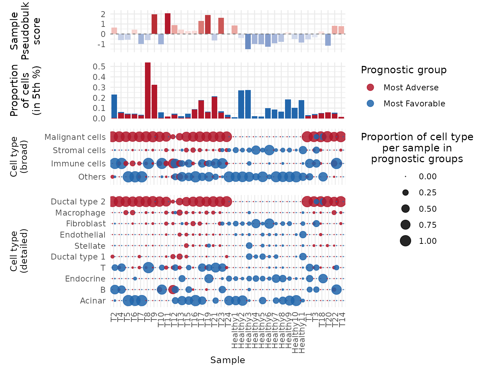
Conclusions
Here, we demonstrate that using
PhenoMapR on single-cell RNAseq data in a
pancreatic cancer dataset successfully identified cells known to be
associated with disease (primarily Malignant and Ductal type 2). These
results agree with those of Jolasun
et al., however our PhenoMapR results
provide an increased level of granularity compared to other methods,
since we retain absolute and rank-ordered information regarding all
cell’s phenotype association. We also nominate cells most associated
with favorable outcomes in PAAD, highlighting potential areas for
additional therapeutic focus.
References
[1] Peng, J. et al. Single-cell RNA-seq highlights intra-tumoral heterogeneity and malignant progression in pancreatic ductal adenocarcinoma. Cell Research 29, 725–738 (2019). https://doi.org/10.1038/s41422-019-0195-y
[2] Han, Y. et al. TISCH2: expanded datasets and new tools for single-cell transcriptome analyses of the tumor microenvironment. Nucleic Acids Res 51, D1425–D1431 (2023). https://doi.org/10.1093/nar/gkac959
[3] Benard, B. et al. PRECOG update: an augmented resource of clinical outcome associations with gene expression for adult, pediatric, and immunotherapy cohorts. Nucleic Acids Res. 54, D1579–D1589 (2026). https://doi.org/10.1093/nar/gkaf1215
[4] Jolasun, Y. et al. SIDISH integrates single-cell and bulk transcriptomics to identify high-risk cells and guide precision therapeutics through in silico perturbation. Nat Commun 16, 11271 (2025). https://doi.org/10.1038/s41467-025-66162-4
Session Info
## R version 4.6.1 (2026-06-24)
## Platform: x86_64-pc-linux-gnu
## Running under: Ubuntu 24.04.4 LTS
##
## Matrix products: default
## BLAS: /usr/lib/x86_64-linux-gnu/openblas-pthread/libblas.so.3
## LAPACK: /usr/lib/x86_64-linux-gnu/openblas-pthread/libopenblasp-r0.3.26.so; LAPACK version 3.12.0
##
## locale:
## [1] LC_CTYPE=C.UTF-8 LC_NUMERIC=C LC_TIME=C.UTF-8
## [4] LC_COLLATE=C.UTF-8 LC_MONETARY=C.UTF-8 LC_MESSAGES=C.UTF-8
## [7] LC_PAPER=C.UTF-8 LC_NAME=C LC_ADDRESS=C
## [10] LC_TELEPHONE=C LC_MEASUREMENT=C.UTF-8 LC_IDENTIFICATION=C
##
## time zone: UTC
## tzcode source: system (glibc)
##
## attached base packages:
## [1] grid stats graphics grDevices utils datasets methods
## [8] base
##
## other attached packages:
## [1] purrr_1.2.2 ggsignif_0.6.4 ggchicklet2_0.7.0
## [4] circlize_0.4.18 ComplexHeatmap_2.28.0 patchwork_1.3.2
## [7] Seurat_5.5.0 SeuratObject_5.4.0 sp_2.2-1
## [10] dplyr_1.2.1 ggpubr_0.6.3 ggplot2_4.0.3
## [13] googledrive_2.1.2 PhenoMapR_0.1.0 testthat_3.3.2
##
## loaded via a namespace (and not attached):
## [1] RcppAnnoy_0.0.23 splines_4.6.1 later_1.4.8
## [4] tibble_3.3.1 polyclip_1.10-7 fastDummies_1.7.6
## [7] lifecycle_1.0.5 rstatix_0.7.3 doParallel_1.0.17
## [10] rprojroot_2.1.1 hdf5r_1.3.12 globals_0.19.1
## [13] lattice_0.22-9 MASS_7.3-65 backports_1.5.1
## [16] magrittr_2.0.5 plotly_4.12.0 sass_0.4.10
## [19] rmarkdown_2.31 jquerylib_0.1.4 yaml_2.3.12
## [22] httpuv_1.6.17 otel_0.2.0 sctransform_0.4.3
## [25] spam_2.11-4 pkgbuild_1.4.8 spatstat.sparse_3.2-0
## [28] reticulate_1.46.0 cowplot_1.2.0 pbapply_1.7-4
## [31] RColorBrewer_1.1-3 abind_1.4-8 pkgload_1.5.3
## [34] Rtsne_0.17 presto_1.0.0 BiocGenerics_0.58.1
## [37] IRanges_2.46.0 S4Vectors_0.50.1 ggrepel_0.9.8
## [40] irlba_2.3.7 listenv_1.0.0 spatstat.utils_3.2-3
## [43] goftest_1.2-3 RSpectra_0.16-2 spatstat.random_3.5-0
## [46] fitdistrplus_1.2-6 parallelly_1.47.0 pkgdown_2.2.0
## [49] codetools_0.2-20 shape_1.4.6.1 tidyselect_1.2.1
## [52] farver_2.1.2 matrixStats_1.5.0 stats4_4.6.1
## [55] spatstat.explore_3.8-1 jsonlite_2.0.0 GetoptLong_1.1.1
## [58] progressr_0.19.0 Formula_1.2-5 ggridges_0.5.7
## [61] survival_3.8-6 iterators_1.0.14 systemfonts_1.3.2
## [64] foreach_1.5.2 tools_4.6.1 progress_1.2.3
## [67] ragg_1.5.2 ica_1.0-3 Rcpp_1.1.1-1.1
## [70] glue_1.8.1 gridExtra_2.3 mgcv_1.9-4
## [73] xfun_0.59 withr_3.0.3 fastmap_1.2.0
## [76] digest_0.6.39 R6_2.6.1 mime_0.13
## [79] colorspace_2.1-2 textshaping_1.0.5 scattermore_1.2
## [82] tensor_1.5.1 spatstat.data_3.1-9 tidyr_1.3.2
## [85] generics_0.1.4 data.table_1.18.4 prettyunits_1.2.0
## [88] httr_1.4.8 htmlwidgets_1.6.4 uwot_0.2.4
## [91] pkgconfig_2.0.3 gtable_0.3.6 lmtest_0.9-40
## [94] S7_0.2.2 brio_1.1.5 htmltools_0.5.9
## [97] carData_3.0-6 dotCall64_1.2 clue_0.3-68
## [100] scales_1.4.0 png_0.1-9 spatstat.univar_3.2-0
## [103] knitr_1.51 reshape2_1.4.5 rjson_0.2.23
## [106] nlme_3.1-169 curl_7.1.0 cachem_1.1.0
## [109] zoo_1.8-15 GlobalOptions_0.1.4 stringr_1.6.0
## [112] KernSmooth_2.23-26 parallel_4.6.1 miniUI_0.1.2
## [115] desc_1.4.3 pillar_1.11.1 vctrs_0.7.3
## [118] RANN_2.6.2 promises_1.5.0 car_3.1-5
## [121] xtable_1.8-8 cluster_2.1.8.2 evaluate_1.0.5
## [124] magick_2.9.1 cli_3.6.6 compiler_4.6.1
## [127] rlang_1.2.0 crayon_1.5.3 future.apply_1.20.2
## [130] labeling_0.4.3 plyr_1.8.9 fs_2.1.0
## [133] stringi_1.8.7 viridisLite_0.4.3 deldir_2.0-4
## [136] lazyeval_0.2.3 spatstat.geom_3.8-1 Matrix_1.7-5
## [139] RcppHNSW_0.7.0 hms_1.1.4 bit64_4.8.2
## [142] future_1.70.0 shiny_1.14.0 ROCR_1.0-12
## [145] gargle_1.6.1 igraph_2.3.2 broom_1.0.13
## [148] bslib_0.11.0 bit_4.6.0